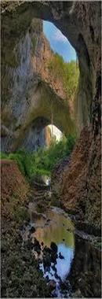

Обща информация

Красотата на българската природа има много лица. Тя не се
изчерпва с уникални скални феномени, величествени планини,
красиви пейзажи и живописни местности. Голяма част от
забележителните места са скрити под земята.
Пещерите в България са много, но само част от тях са
облагородени и достъпни за туристически посещения.
Останалата част са привилегия само на опитни катерачи и
спелеолози и изискват специална подготовка и екипировка.
В много от българските пещери са открити следи от древни
времена. Те са били обитавани от хора още от каменната ера, а
някои, като пещерата Магурата, носят белези на древни култури.
Най-популярни и интересни сред туристите са пещерите
Дяволското гърло, Ягодинска, Харамийска, Ухловица, Съева дупка,
Бачо Киро, Проходна, Деветашка, Снежанка, Леденика, Орлова чука,
Магурата и Лепеница.